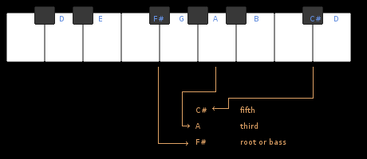

GROWL
I'd rather be playing guitar
 EN
EN
A source of constant confusion for the beginner and occasionally still for the seasoned pro; numeric notation in music can be a pain. This article explores why and when you might see numeric representations for musical structures and how to get your head round them. You'll see that of primary importance at all times in music is context. Context defines what we are talking about and what is possible.
A STARTING POINT: INTERVALS
I recommend thinking about these as your main usage of numbers in music and the first thing you should nail for terminology. Look at this piano keyboard showing the C major scale on JUST the white notes (C,D,E,F,G,A,B,C). Each interval (space between two notes) has a name that at its most basic is just the number eg: second, third. Major scales, as shown with C, only contain these simply named intervals. An octave is equivalent to an eighth, but we say octave, not eighth.
The important thing to note with this example is that these are the intervals when all the notes are compared to the lowest C. They are the "distance from" the low C. When we talk intervals, we aren't talking about an attribute of a scale or chord, just literally the space between any two given notes. You could for example say that: D to E is.... that's right, a second. It is like a measure of pitch distance.
In this example, where we look at C MAJOR, none of the black notes appear in the scale. But we can still describe their distance away from the note C. For example; E flat (the black note between D and E) is a minor third away from C. Those of you who know your scales will know that if we chose a different C scale, like a C minor for example. Then some of these black notes will start being used.
As a quick aside, sometimes people use slightly different descriptive terms for intervals, often again due to context. A fifth can be called a "perfect" fifth. All of the notes shown on white notes might get called "MAJOR second", "MAJOR third" etc, just to specify them more clearly. Also you may see the terms "flat 3", "flat 6" and "flat 7" used for "minor 3rd" etc.
Of final note are tensions. These are intervals bigger than an octave. In this situation we just continue counting past 8. When we measure from a C, to the C an octave above and then further to the adjacent D, although this is a 2nd we actually call it a 9th.
So in summary, an interval number is JUST a description of the distance between two notes.
MORE NUMBERS: CHORDS
When we used the notes of a scale to create chords we do that by taking a root note (bass note) and then putting notes from the scale on top of it, usually in stacks of a third. E.g. within C major: C bass note -> C-E-G makes a C chord. G bass note -> G,B,D a G chord. I've mapped this out for a different scale below(D major) to let you see the terminology applied to a scale other than C major. I've shown taking the F# as bass and stacking the A and C# of the scale on top.
Once we have constructed a chord, we can consider it as its own entity away from the scale. When we do so, we can now call the bass note of our chord our 1 or root. We can then measure to the third and the fifth of the chord from this root. So when talking about the chord we can refer to its "first", "third" and "fifth". Notice that because we changed the context from scales to chord, we can use the same numeric names in a different way! To be more specific we can say the "chordal third..." etc.
YET MORE NUMBERS, THIS TIME NUMERALS:
When we are building chords from a scale, we can refer to those chords by the position that their ROOT note occupies in the parent scale. Staying with our D major example; if we make chords on all of the notes in the scale we get the following:
Chords are notated by musicians with roman numerals and verbally we can call them the "two chord, three chord" etc. There are actually some sophisticated names for these chords too and I recommend learning them as in later theory it becomes very useful.
- 1 chord: TONIC
- 2 chord: SUPERTONIC
- 3 chord: MEDIANT
- 4 chord: SUBDOMINANT
- 5 chord: DOMINANT
- 6 chord: SUBMEDIANT
- 7 chord: LEADING TONE(MAJOR) SUBTONIC (minor)
These names actually come from the specific name of the notes within any scale. So as well as being able to say that D is a major second in the C major scale. We can also call D the supertonic of C. Please note that roman numeral notation uses upper case for major chords and lower for minor/diminished.
IN SUMMARY:
If your brain is not crying in fright I hope you can see that it is all about context. The same numbers are just used to refer to intervals, chords or tones in different ways. It can get confusing when you talk about music, not knowing whether someone is asking about a chordal fifth, the interval of a fifth or the fifth chord in a scale. I've supplied some stricter terminology, I do encourage you to learn it. At the very least it makes thinking about stuff a lot clearer!